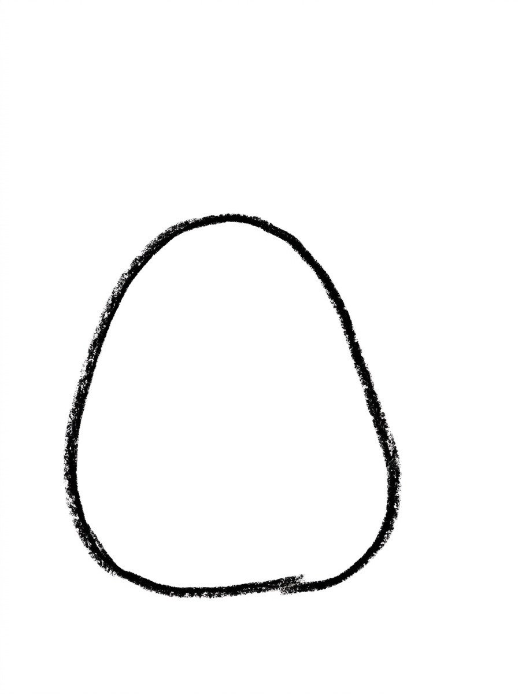
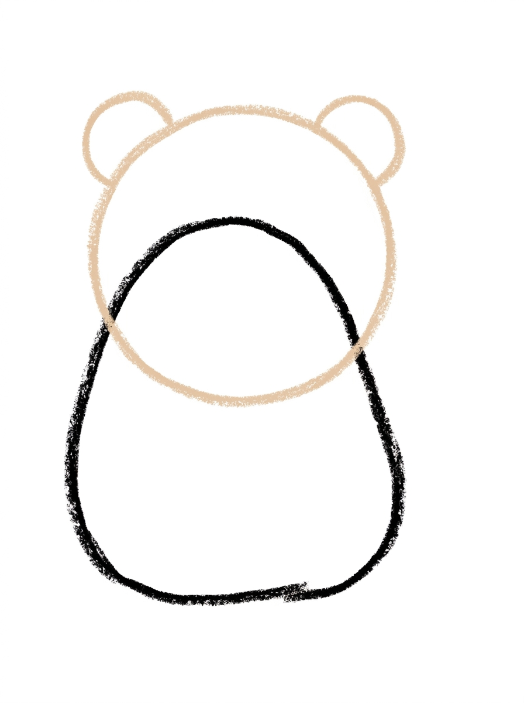
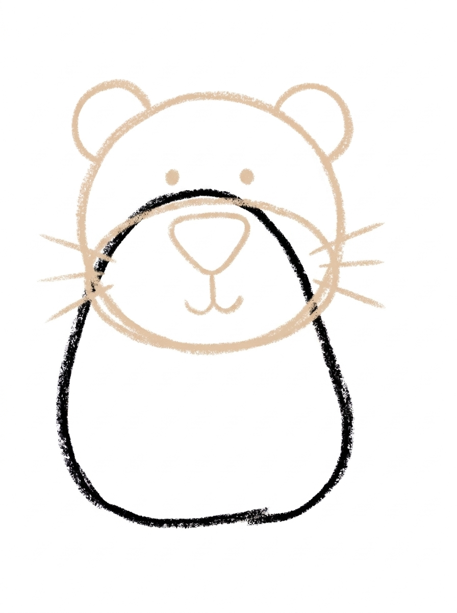
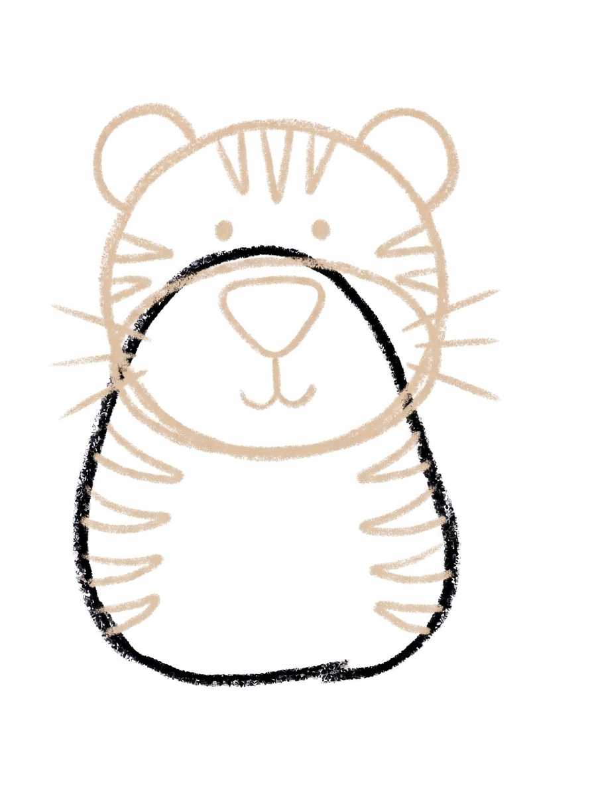
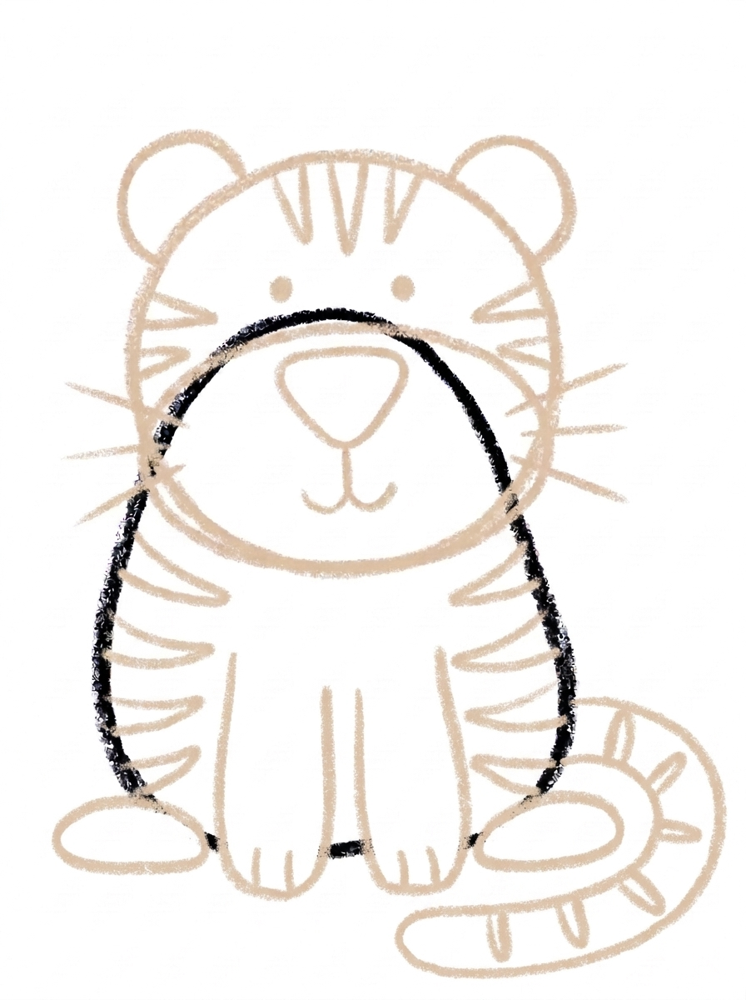
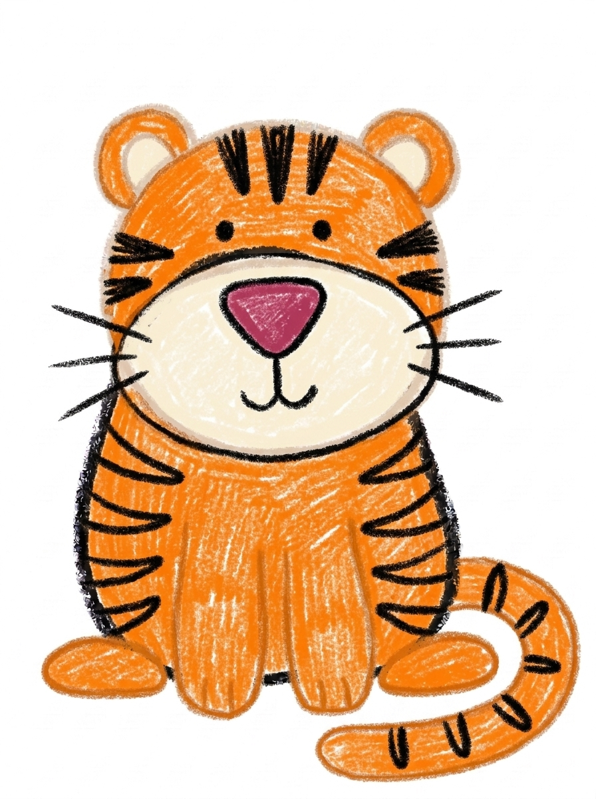

Tiger Drawing for Kids How to Draw A Tiger in 6 Easy Steps
Quick Answer
Draw a tiger in six easy steps: a wide stocky body, a big round head with rounded ears, a muzzle and whiskers, stripes on the head, cheeks, and body, then thick legs, paws, and a striped tail. Color it orange with black stripes. Made for ages 3 and up — print free.
At a Glance
- Subject: How to draw a tiger
- Ages: 3+
- Steps: 6 steps
- Time: ~15 min
- Difficulty: Easy
- Supplies: Paper, crayons
This tiger is built round and stocky on purpose — a wide sitting body, a big round head set low, and rounded ears — so it finishes as a tiger instead of a house cat. The stripes at step 4 are what seal the deal.
✏️ Draw Your Tiger in 6 Easy Steps
One step per box — this step by step tiger drawing shows each new part in a different color so kids can see exactly what changed.
Step 1: The Body

Draw one big wide oval, much wider at the bottom — that's the tiger's big stocky sitting body.
Step 2: The Head and Rounded Ears

Add a big wide circle low on the body so it overlaps deep inside it, and a rounded half-circle ear on the top-left and top-right of the head. Tiger ears are round, not pointy!
Step 3: The Face

Draw a wide muzzle oval across the lower half of the head, two eye dots above it, a big triangle nose, a little split mouth curve, and three whiskers on each side.
Step 4: The Stripes

Draw three stripes on top of the head, three on each cheek, and four along each side of the body.
Step 5: The Legs, Paws, and Tail

Add two thick front legs with big paws, a big hind paw on each side, and one thick tail wrapping around the side with stripes across it.
Step 6: Color It In

Color your tiger! Bright orange with black stripes, a cream muzzle, and a dark pink nose. Great drawing!
📊 Tiger Drawing by Age
Every age can join in — just adjust the job.
| Age | What they can do | Tip |
|---|---|---|
| 3-4 | Draw the wide body oval and color the finished tiger bright orange. | Wider at the bottom is the key — a pear-shaped body reads as a big sitting tiger, not a standing cat. |
| 4-5 | Add the low round head with its rounded ears, the muzzle face, and the thick front legs. | Round ears, always — the moment the ears become triangles, the tiger turns into a cat. |
| 6+ | Finish all six steps, including the full stripe pattern — three on the head, three per cheek, four per side — and the striped wrapping tail. | Count the stripes out loud together as they draw; the 3-3-4 pattern is a built-in counting game. |
🖨️ Download Your Free Tiger Drawing Printable
The printable lays out all 6 steps one per box, big enough for little hands — kids draw right alongside each step.
⬇️ Open Free Printable 🖨️ Print🎁 Free printable for ages 3+
🐯 Tiger Jungle Page
Give your tiger a jungle: draw tall grass at the bottom of the page, big leaves and a tree at the sides, and something for the tiger to watch — a butterfly is traditional. Then decide together what kind of tiger this is: a sleepy one who wants a nap in the shade, a brave one guarding the path, or a cub still growing into its paws. Write one sentence about the tiger under the drawing (or dictate it for a grown-up to write).
What You'll Need to Draw A Tiger
All you need is a pencil, an eraser, and crayons or markers. For the colors in the tutorial, have bright orange ready for the body, head, ears, legs, paws, and tail, black for the stripes, whiskers, and eyes, cream for the muzzle, and dark pink for the nose. Regular printer paper or a sketchbook both work.
What They're Learning
This tutorial practices wide ovals and half-circles, symmetry across a face (ears, eyes, whiskers, cheek stripes), and counted repetition — the 3-3-4 stripe pattern. Kids also work on placement, setting the head low so it overlaps the body, and on the observation skill of noticing what makes one animal different from a similar one.
Make It Yours
Try a white tiger with gray-blue stripes, a baby cub drawn with the same steps but smaller and rounder, a night scene with the tiger's eyes as the brightest thing on the page, or a whole tiger family — one big, one small — sitting in a row.
🛒 Our Favorite Drawing Supplies
These are the supplies we reach for in our own home — washable (because kids), quality paper, and enough colors to avoid fights.
As an Amazon Associate, MomYouNeedThis earns from qualifying purchases — at no extra cost to you.
💡 Tiger Drawing Tips for Parents
Step 2 does the heavy lifting: the head circle goes low on the body, overlapping deep inside it, not perched on top like a snowman's head. A perched head makes the tiger look stacked and cat-like; a low, sunk-in head makes it look like one solid animal. Check the ears in the same step — rounded half-circles, every time.
At step 4, count the stripes together: three on top, three per cheek, four per side. If your child wants more stripes on the body, that's fine — but keep the cheeks at three per side, because that tidy pattern near the face is what makes the tiger look designed rather than scribbled. Uneven stripe lengths are okay; real stripes taper and vary.
🐯 Tigers in the Real World
Real tigers are the biggest wild cats on Earth. They live in the forests and tall grasslands of Asia, where their orange coats blend into dry grass and their black stripes break up their outline in the shadows. No two tigers wear the same pattern — every stripe layout is one of a kind, even between brothers and sisters.
Tigers are strong swimmers who will happily cross a river, and they do most of their hunting at night, moving quietly on padded feet. Tiger cubs stay with their mother for about two years while they learn to hunt. When your child finishes the drawing, ask which fact their tiger shows best: the stripes, the size, or the quiet stare.
✋ Warm-Up: Stripe Marks and Round Ears
Before the real drawing, fill a scrap page with tiger marks. Draw rows of short curved stripes — fat in the middle, pointy at both ends — and race to see who can draw ten first. Then practice pairs of round ears: two half-circles side by side, over and over, until they come out round without thinking.
Warm-ups are also where mistakes get cheap. If a line goes wrong on scrap paper, nobody cares — cross it out and draw the next one. Remind your child that the same rule works in the tutorial: draw lightly, and if one part goes sideways, fix just that part. The rest of the tiger is already fine.
📖 Give Your Tiger a Story
A finished tiger deserves a name and a plan. Ask your child: what is this tiger's name, and what is it watching so quietly? Have them dictate one or two sentences and write them under the drawing in your best handwriting — a caption turns a practice page into a story page, and kids love reading their own words back.
Keep the page and start a small collection. The butterfly this tiger is watching has its own tutorial, and drawing it next gives the tiger's story a second page. A folder of finished drawings becomes a storybook your child 'wrote' — and a reason to pick the next animal. Keep the animal stories going with how to draw a cat — the tiger’s smaller cousin — or a wilder neighbour, how to draw a wolf.
❓ Tiger Drawing FAQs
What is the easiest way to draw a tiger?
Start with a wide, stocky sitting body, set a big round head low on it, and give it rounded ears and a broad muzzle. Then add the stripes — three on the head, three on each cheek, four along each side. Stocky body plus round ears plus stripes is the tiger recipe.
What age is this tiger drawing for?
It's made for ages 3 and up. Younger kids can draw the body, head, and coloring, while older kids handle the face, the counted stripe pattern, and the tail themselves.
What supplies do we need?
A pencil, an eraser, paper, and crayons or markers. For colors you'll want bright orange, black for the stripes, cream for the muzzle, and dark pink for the nose.
Is the printable really free?
Yes — every printable on MomYouNeedThis is 100% free, including this tiger drawing tutorial. There is no signup, no email, and no catch — just download, print, and draw.
How do I print it?
Open the PDF and choose Print, then set the scale to 100% (sometimes called Actual Size) so the steps print at full size. The tutorial is designed for regular US Letter paper, and plain printer paper works perfectly.
How is a tiger different from a cat when you draw it?
Three things: a tiger's ears are rounded half-circles, not triangles; the body is wide and stocky, not slim; and the muzzle is broad with stripes on the cheeks. Pointy ears on a slim body reads as a cat every time — round ears on a chunky body reads as a tiger.
How many stripes does the tiger have?
This tiger has three stripes on top of the head, three on each cheek, and four along each side of the body, with more stripes across the tail. Counting them as you draw them is half the fun.
Can my tiger be a different color?
Yes — try a white tiger with dark stripes, a pink cartoon tiger, or a blue one. Keep the round ears, stocky body, and stripes, and it stays a tiger in any color.
📚 Keep Exploring
- ✏️ All 76 Drawing Tutorials 76 free step-by-step drawing tutorials for kids.
- 🐾 Animal Coloring Free animal coloring pages for kids.
- ✏️ Drawing Practice Free printable drawing pre-writing worksheet for toddlers.